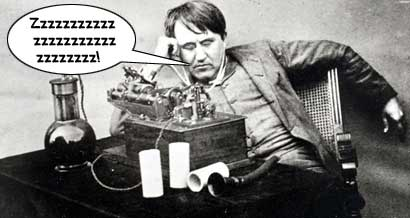

WilyWalnut.com
Meet the Genius in YOUR Brain!
Thomas Edison's Top Ten Invention Strategies: 1--2--3--4--5--6--7--8--9--10 Power Napping for Creative Gems, Inspiration and Invention!Thomas Edison's 2nd Secret Million Dollar Invention Strategy 2. Power Napping for Creative Gems, Inspiration and
Invention!
Other luminaries such as Winston Churchill, Margaret Thatcher, Lyndon Johnson and Ronald Reagan have shared that secret weapon. And it is called Power Napping! Now while you can 'get by' on 4 or 5 hours sleep a night, new research by Dr. James B. Maas, author of the book "Power Sleep", shows that's not enough for peak health. You need to compensate in other ways. As much as anything, Edison delighted in the popular image of being a heroic tireless inventor who proclaimed sleep "a heritage from our cave man days." But really he needed to nap in the day to keep his brain functioning well. It's said that he could sleep at the drop of a hat and was once discovered asleep in a cupboard! So Edison used power napping to catch up on much-needed rest and to give his phenomenal brain a break from conscious effort, allowing his unconscious processes to do the genius thinking for him. Let's see how that worked... During his day, Edison would take time out by himself and relax in a chair or on a sofa. Invariably he would be working on a new invention and seeking creative solutions to the problem he was dealing with. He knew that if her could get into that "twilight state" between being awake and being asleep, he could access the pure creative genius of his subconscious mind. To prevent himself from crossing all the way over the "genius gap" into deep sleep, he would nap with his hand propped up on his elbow while he clutched a handful of ball-bearings. Then he would just drift off to sleep, knowing that his subconscious mind would take up the challenge of his problem and provide a solution. As soon as he went into too deep a sleep, his hand would drop and the ball-bearings would spill noisily on the floor, waking him up again. He'd then write down whatever was in his mind.
It doesn't take long to train yourself to power nap. If you are only getting 4 or 5 hours of sleep a night, twenty minutes napping can recharge your brain and give you a real mental, emotional and physical lift, so that you can perform at your peak again. When looking for creative answers to problems or new ideas for songs, paintings, poems, novels or inventions, do what your grandmother always recommended and "sleep on it". Let your subconscious mind go to work for you while you sleep. Power napping is a great way of catching up on lost sleep. But 8 hours a day is still recommended for peak health and well-being. Edison was so driven by his commitment to be productive, that he would not allow himself to sleep more than a few short hours a night. That doesn't necessarily make it the ideal lifestyle for everyone. Albert Einstein admitted that he needed at least 10 hours sleep a night to perform at his best. I personally find that 4 or 5 hours sleep a night goes by like a blip. I don't remember my dreams as easily. It's easy to get grouchy later in the day. When I sleep for 7 - 8 hours, my sleep seems leisurely and full of the magic of dreams, and I wake up happy. What about you?
Modern life is a mean old bitch sometimes and we don't get the chance to sleep as much as we would like. It's important to try and give yourself "top-up" times when you catch up on sleep. Either schedule earlier nights on weekends or use the power nap technique to get your rest. You'll live longer and smarter if you get the sleep you need. And sleep is a great way to access your creativity, isn't that right Mr Edison? Next: Set Yourself An Idea Quota and Become Immensely Productive! References: http://members.aol.com/ELECTRPOW1/POWER1.HTM - Edison in his own words Power Sleep - The Revolutionary Program that Prepares Your Mind for Peak
Performance
| ||||
|

"Unleash Your Inner Genius For Creativity & Innovation!" Copyright 2001-2015 WilyWalnut.com SITE MAP